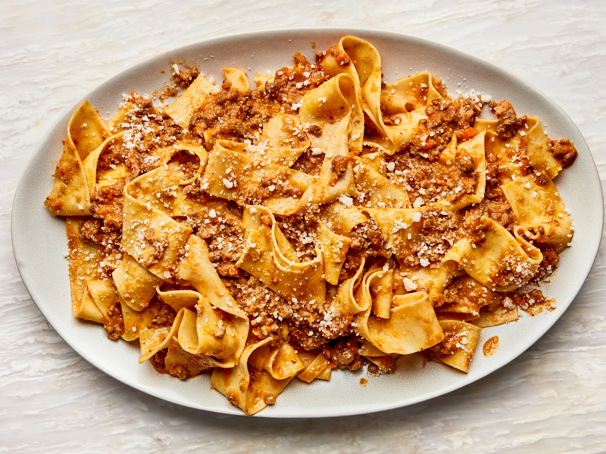

Pasta Bolognese

Description
Bolognese isn't your typical tomato-based spaghetti sauce. It originated in Bologna, Italy, and is a hearty ragù
that starts with a soffritto — that all-important blend of finely diced onion, carrot, and celery — loaded up
with a variety of ground meats and cooked with white wine. Then, a relatively small amount of tomatoes are added
along with stock; the sauce is cooked slow and low to develop and concentrate the flavors. To finish, it's
enriched with a touch of cream.
Ingredients
Steps
- Gather the ingredients.
- Heat 1 tablespoon of the olive oil in a large, heavy saucepan until shimmering. Add the onion, carrot,
celery, and pancetta and cook over moderate heat, stirring occasionally, until the vegetables are softened
but not browned, about 8 minutes. Scrape the vegetable mixture into a large bowl.
- Add the remaining 3 tablespoons of olive oil to the saucepan and heat until just shimmering. Add the beef,
veal, and pork and cook over moderately high heat until just barely pink, about 5 minutes.